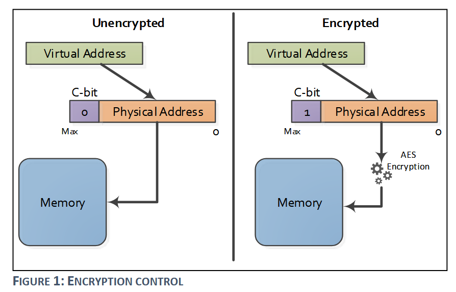
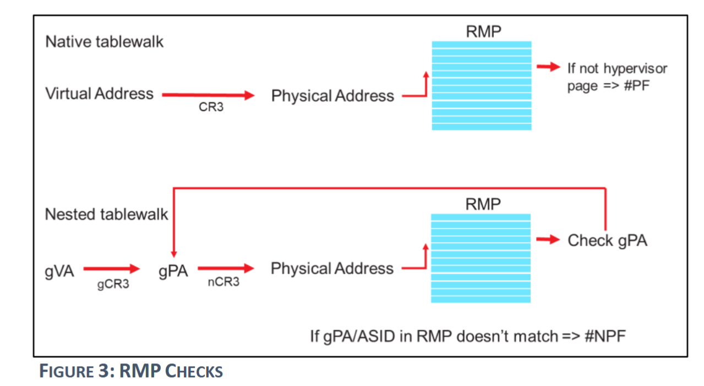

机密虚拟机的威胁模型
本文将介绍近年兴起的机密虚拟机（Confidential Virtual Machine）技术所旨在抵御的威胁模型，主要关注内存机密性（confidentiality）和内存完整性（integrity）两个方面。在解释该威胁可能造成的问题的同时，还将同时介绍现在最主流的机密虚拟机解决方案之一的 AMD SEV-SNP 如何如何应对该威胁。
在正式介绍之前，有必要先明确这样一个概念，在机密虚拟机的威胁模型中，Hypervisor 被认为是不可信的。恶意的 Hypervisor 可能读取虚拟机的内存数据，导致虚拟机用户隐私泄露；或是直接写入虚拟机内存，导致虚拟机运行产生预期之外的结果。
机密性
虚拟机内存
由于虚拟机的内存是通过第二阶段页表映射（GPA -> HPA）到宿主机内存中，且该页表由 Hypervisor 进行维护。因此在未引入机密虚拟机技术时，Hypervisor 能够直接借助该页表映射，手动进行地址转换并读取虚拟机内存数据。
对于虚拟机内存的机密性，AMD 在最早的 SEV 技术（2016 年）中已经解决。解决方法是为每个虚拟机引入一个 AES 加密密钥，虚拟机指定为私有的页面在被读写时将会自动地进行加解密，这一过程对于虚拟机而言完全无感。当 Hypervisor 尝试读取虚拟机的私有内存数据时，只会读取到被加密过的密文数据，保障了数据的机密性。

虚拟机寄存器状态
虚拟机在 VM Exit 到 Hypervisor 时，需要将此时的 CPU 状态，即寄存器状态进行保存（通常保存在一个数据结构中，AMD-V 虚拟机为 VMCB）。而 Hypervisor 就能在重新 VM Entry 到虚拟机前，很轻松地读取其中的内容。
AMD 在 2017 年引入了 SEV-ES（Encrypted State）特性，在发生 VM Exit 时，虚拟机寄存器内容会被自动加密，并存入加密的 VMSA（Virtual Machine Save Area）中，原有的 VMCB 的控制字段（非加密）存储着指向 VMSA 的指针。
1 | struct __attribute__ ((__packed__)) vmcb_control_area { |
完整性
内存加密只解决了 Hypervisor 恶意读取虚拟机数据的问题，Hypervisor 仍然可以在不知道数据具体内容的情况下，恶意地对虚拟机内存进行写入，从而破坏虚拟机内存数据，造成预料之外的结果。
AMD 在 2020 年引入了 SEV-SNP 扩展，引入了对虚拟机完整性保护的支持。核心机制是 只有内存页面的拥有者才能够写入该页面 。具体实现方式是引入了新的数据结构 RMP（Reverse Map Table），RMP 是一个在整个系统中共享的单一数据结构，它包含了每个虚拟机可能使用的 HPA 页面的条目。RMP 的作用是为了跟踪每个内存页面的拥有者。
RMP 表不能直接被写入，需要通过 SEV-SNP 引入的新的 CPU 指令来操作。
RMP 检查在虚拟地址通过 Page Walk 得到 HPA 后进行，无论是 Hypervisor 还是虚拟机都需要进行。对于 Hypervisor 而言，它无需进行两阶段地址翻译，因此在完成 VA -> PA 后，查看 PA 对应的 RMP 条目，验证本页面是否属于 Hypervisor；对于虚拟机而言，它在完成 GVA -> GPA -> HPA 后， 查看 HPA 对应的 RMP 条目，检查本次访存是否合法（具体检查内容下文详细讨论）。

数据重放（Data Replay）
攻击方式
在引入虚拟机内存加密的情况下，虽然无法直接得知从虚拟机中读取到的内存数据的内容，但由于写入操作不受限制，因此恶意的 Hypervisor 可以将从某个内存页处读取到的旧数据保存起来，在未来的某个时刻将这些旧数据进行重放。
注意，Hypervisor 由于没有被分配 AES 密钥，因此读取到的数据为密文。此时 Hypervisor 不必知道这段密文内容是什么，只需要知道它可能代表了虚拟机某一时刻的状态，Hypervisor 可以在未来的某个时刻将这段密文数据覆写到原来的内存位置，即将虚拟机的某段内存状态进行回退，从而实施可能的攻击。
由于 AES 加密为对称式加密，因此写入经同一个密钥加密的密文数据效果就等同于直接写入明文数据。
防御方式
目标： 只有内存页面的拥有者才能写入页面。
在 RMP Check 时检查 RMP 条目的 Assigned, ASID, Immutable 字段，验证本次内存写入者是否是页面的拥有者。不同拥有者类型所对应的字段值如下表所示：
| Owner | Assigned | ASID | Immutable |
|---|---|---|---|
| Hypervisor | 0 | 0 | - |
| Guest | 1 | ASID of the guest | - |
| AMD-SP | 1 | 0 | 1 |
数据污染（Data Corruption）
攻击方式
恶意 Hypervisor 直接将垃圾数据写入虚拟机的内存中，可能造成预期外的行为。
防御方式
目标： 同数据重放。
AMD SEV-SNP 实现方式：同数据重放。
内存混叠（Memory Aliasing）
攻击方式
恶意 Hypervisor 通过直接写入第二阶段页表，将多个 GPA 映射到同一个 HPA 上。这样的“内存混叠”现象将很容易导致特定物理内存页面的数据被污染，造成预期外的行为。
防御方式
目标： 每个 host 内存页面在同一时间只能被一个 guest 内存页面映射。
在 AMD SEV-SNP 中，RMP 条目引入了 Guest_Physical_Address 字段，保存了映射到本页面的 GPA。在执行 RMP 检查时，验证发起本次访存的 GPA 是否等于 Guest_Physical_Address。
内存重映射（Memory Re-Mapping）
攻击方式
恶意 Hypervisor 通过直接写入第二阶段页表，将一个 GPA 映射到多个 HPA，或者更改它所映射的到的 HPA。这将导致虚拟机看到一个不连续的内存视图（an inconsistent view of memory）。下面列举一个可能的场景：
- Hypervisor 将虚拟地址
0x1000映射到物理页 P1； - 应用程序向
0x1000写入敏感数据。 - Hypervisor 修改页表，将
0x1000映射到物理页 P2； - 应用程序再次读取
0x1000，发现数据不见了或变成了其他值； - 程序逻辑因此出错，可能跳过安全检查、泄露信息、甚至崩溃。
防御方式
目标： 每个 guest 内存页面在同一时间只能映射一个 host 内存页面。
AMD SEV-SNP 在 RMP 条目中引入 Validated 位，表示本页面是否已经被验证。每个页面被创建时为未验证状态，必须要经过 PVALIDATE 指令验证（验证过程会检测到是否存在一个 guest 页面重复验证的情况）后才能被写入，页面在被指令 RMPUPDATE 更新后又会变成未验证状态，此时需要重新验证。
 微信
微信 支付宝
支付宝